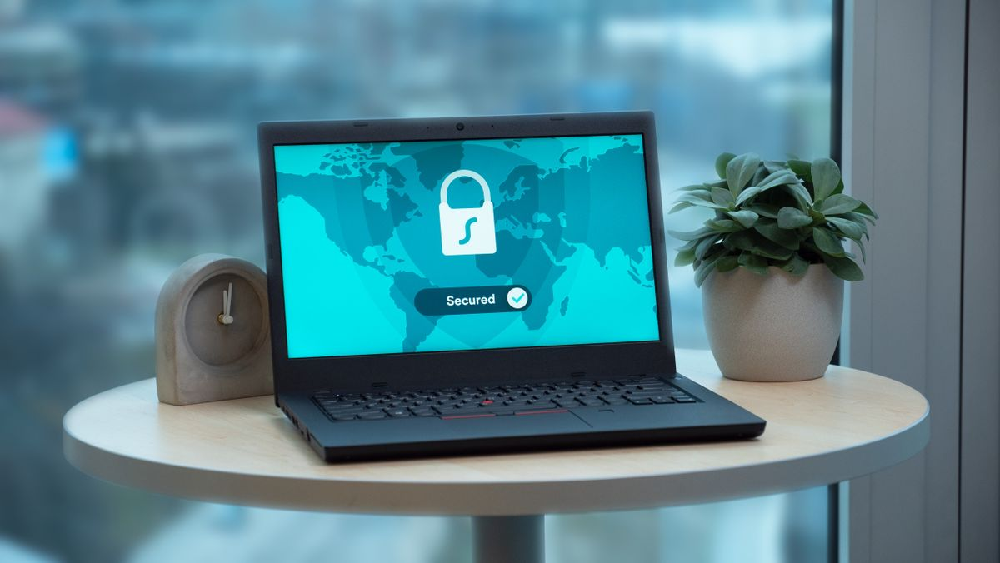
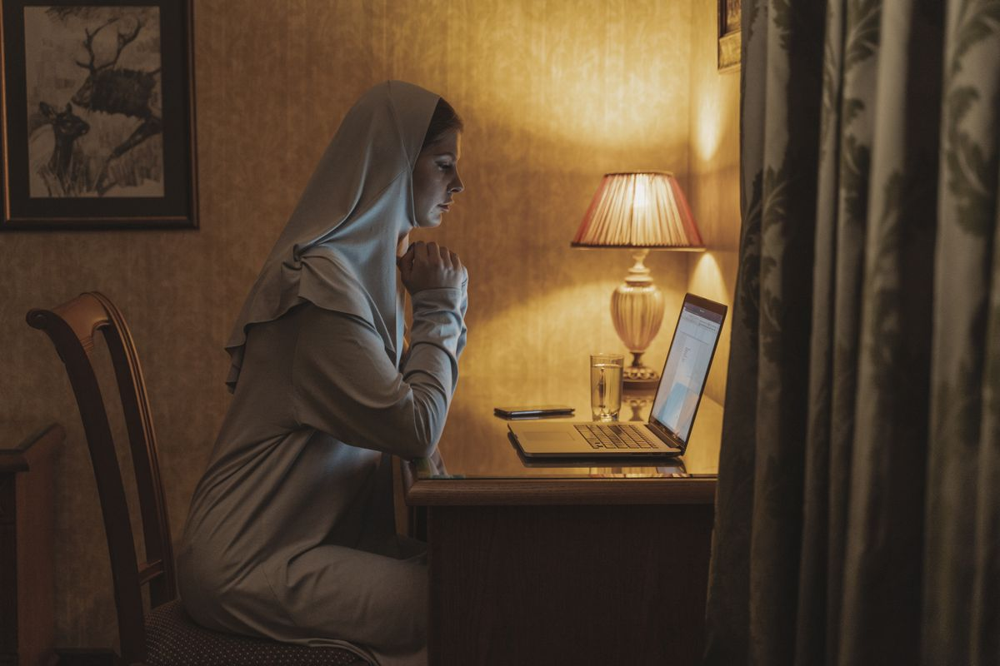

Setiap tahun banyak orang memperpanjang lisensi antivirus berbayar karena takut laptopnya kena virus. Padahal kalau kamu pakai Windows 10 atau Windows 11, antivirusnya sudah ada di dalam laptopmu sejak pertama kali dinyalakan. Namanya Microsoft Defender Antivirus, dan per November 2026 halaman resmi Microsoft menulis bahwa Windows 11 dilengkapi Defender bawaan tanpa biaya tambahan untuk perlindungan antivirus ini.
Apa Itu Windows Defender dan Kenapa Gratis
Microsoft Defender Antivirus adalah bagian dari aplikasi Windows Security yang terpasang di setiap PC Windows 10 dan Windows 11. Ia berjalan di latar sejak laptop dinyalakan, memindai file yang kamu unduh secara otomatis, dan menyingkirkan software berbahaya sebelum sempat merusak. Kamu tidak perlu mengunduh apa pun, tidak perlu membuat akun, tidak perlu memasukkan kartu kredit. Gratisnya bukan masa trial dan bukan versi potongan, tapi perlindungan penuh yang didanai Microsoft lewat lisensi Windows itu sendiri.
Satu hal yang sering bikin bingung: ada juga aplikasi bernama "Microsoft Defender" di Microsoft Store. Itu aplikasi yang berbeda. Aplikasi itu hanya bisa dipakai penuh kalau kamu berlangganan Microsoft 365, dan di PC Windows fungsinya cuma jadi dashboard yang menampilkan apa yang dikerjakan Windows Security. Jadi kalau niatmu cuma butuh antivirus gratis, jangan unduh aplikasi itu. Yang kamu butuhkan, Windows Security, sudah ada di laptopmu.
Di dalamnya ada beberapa lapis perlindungan yang bekerja otomatis: pemindaian real-time setiap file yang dibuka atau diunduh, perlindungan berbasis cloud yang mengenali ancaman baru dengan cepat, dan pemindaian terjadwal yang berjalan sendiri. Kamu tidak perlu mengatur apa pun, tapi kalau penasaran, semua sakelarnya bisa dilihat di aplikasi Windows Security.

Cara Memastikan Defender Aktif dan Melindungimu
Karena Defender bekerja diam-diam di latar, banyak orang tidak sadar ia sedang berjaga. Ikuti lima langkah ini supaya kamu yakin:
- Klik menu Start, ketik "Windows Security", lalu tekan Enter.
- Pilih menu "Virus & threat protection" di panel kiri.
- Lihat status di bagian atas. Kalau berwarna hijau dan tidak ada peringatan tindakan, berarti proteksinya aktif.
- Pastikan sakelar "Real-time protection" dalam posisi menyala (On).
- Klik "Quick scan" untuk pemindaian cepat. Kalau laptop terasa aneh, misalnya lemot tanpa sebab atau muncul pop-up aneh, pilih "Full scan" untuk pemeriksaan menyeluruh.
Satu catatan penting: kalau kamu memasang antivirus pihak ketiga, Windows akan menonaktifkan proteksi real-time Defender secara otomatis. Itu mekanisme bawaan Windows, bukan error, supaya dua antivirus tidak bentrok.
Terakhir, pastikan Windows Update berjalan normal. Definisi virus baru masuk ke laptopmu lewat update itu, jadi laptop yang update-nya mati berbulan-bulan perlindungannya ikut kedaluwarsa. Di halaman yang sama kamu juga bisa menekan tombol Check for updates untuk memastikan definisi virusnya versi terbaru.

Kapan Defender Saja Cukup, dan Kapan Antivirus Berbayar Masuk Akal
Untuk pemakaian rumahan yang normal, Defender sudah cukup. Maksudnya normal: browsing, mengerjakan tugas, nonton, belanja online, dan kerja dokumen. Ini bukan klaim asal. WinPoin yang mengutip data AV-TEST Oktober 2025 mencatat Defender masuk jajaran Top Product dengan nilai sempurna di tiga kategori: Protection, Performance, dan Usability, sejajar dengan antivirus berbayar seperti Kaspersky dan Norton.
Skenario yang paling sering terjadi: laptop baru biasanya sudah terpasang antivirus pihak ketiga versi trial 30 hari. Begitu masa trial-nya habis, jangan panik dan jangan buru-buru beli. Copot saja antivirus trial itu, dan Windows akan mengaktifkan kembali proteksi real-time Defender secara otomatis.
Lalu kapan antivirus berbayar masuk akal? Kalau kamu butuh fitur tambahan yang memang tidak disediakan Defender. Contohnya VPN untuk WiFi publik, password manager bawaan, proteksi pencurian identitas, dukungan pelanggan lewat telepon atau live chat, atau satu paket proteksi untuk banyak perangkat termasuk Mac dan HP sekaligus. Kalau kamu tidak butuh semua itu, uang langganan tahunanmu lebih baik dipakai buat hal lain.
Kebiasaan yang Lebih Penting daripada Antivirus Mahal
Sejujurnya, tidak ada antivirus di dunia yang bisa melindungimu seratus persen kalau kebiasaanmu sendiri ceroboh. Lima kebiasaan ini justru lebih menentukan daripada merek antivirus apa pun:
- Selalu pasang update Windows begitu tersedia. Celah keamanan yang belum ditambal adalah pintu masuk favorit malware.
- Jangan buka lampiran email atau pesan dari pengirim yang tidak kamu kenal, apalagi yang mendesakmu mengklik sesuatu.
- Unduh software hanya dari situs resmi pembuatnya atau dari Microsoft Store. Situs unduhan abal-abal adalah sumber virus paling umum.
- Backup file penting ke cloud atau hard disk eksternal. Kalau ransomware sampai lolos, backup adalah satu-satunya jalan keluar yang pasti.
- Pakai password yang berbeda untuk tiap akun penting, dan aktifkan verifikasi dua langkah di email serta mobile banking. Sekali email jebol, semua akun yang pakai password sama ikut jebol.
Jadi sebelum kamu memperpanjang lisensi antivirus tahun ini, buka dulu Windows Security di laptopmu dan lihat sendiri: proteksinya sudah berjalan sejak hari pertama laptop dinyalakan. Uang langganan yang hemat lumayan buat checkout 11.11 tanggal 11 nanti. Antivirus gratis, resmi dari Microsoft, tanpa masa trial dan tanpa trik apa pun.
Sumber dan Info Resmi
Fakta dan detail di artikel ini merujuk ke sumber berikut, yang sudah diverifikasi isinya:
- Microsoft: Windows Comprehensive Security: Windows 11 dilengkapi Microsoft Defender Antivirus bawaan; "You don't have to pay extra for this antivirus protection"; proteksi real-time yang selalu aktif.
- WinPoin: Perlukah Antivirus Tambahan di Windows 11: Defender gratis dan preinstalled tanpa konfigurasi tambahan; proteksi real-time terhadap virus, malware, dan ransomware; AV-TEST Oktober 2025 menempatkan Defender sebagai Top Product dengan nilai sempurna (Protection, Performance, Usability); Windows menonaktifkan proteksi real-time Defender secara otomatis saat antivirus pihak ketiga terpasang; kesimpulan untuk pengguna rumahan Defender sudah sangat cukup.
- Techdows: Microsoft Defender untuk PC: Windows Security (Defender Antivirus + Firewall) sudah ada di setiap PC Windows 10/11 tanpa biaya; aplikasi "Microsoft Defender" terpisah di Microsoft Store membutuhkan langganan Microsoft 365, jangan tertukar.
- Geek Rewind: Cara Memakai Antivirus Bawaan Windows 11: cara membuka Windows Security (klik Start, ketik "Windows Security", pilih Virus & threat protection); Defender sudah aktif dan berjalan di latar di Windows 11.
- SoftwarePair: Review Microsoft Defender Antivirus: Defender tidak menyertakan VPN, password manager, proteksi pencurian identitas, dan dukungan pelanggannya terbatas; dasar bagian kapan antivirus berbayar masuk akal.
- Jagoweb: Rekomendasi Antimalware Gratis 2026: daftar anti-malware gratis 2026 yang diperbarui akhir Oktober 2026, Defender masuk daftar; menyebut deteksi berbasis cloud dan gratis tanpa biaya tambahan.